第二节 连接与切断
一、连接的方法
采用某些着法，以避免棋子被对方切断，称为“连接”。
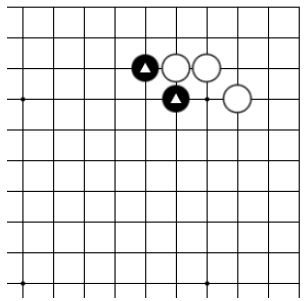
基本图

图一
基本图：怎样连接黑棋△二子呢？
图一：黑1在围棋术语中叫作“粘”。把两块棋或两个子紧紧地连接在了一起，非常的牢固，没有任何断点。
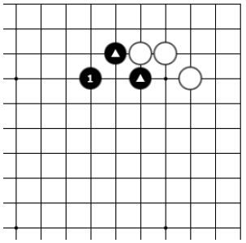
图二
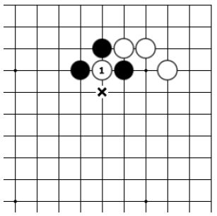
图三
图二：黑1在围棋术语中叫作“虎”或“虎口”（有一点像老虎在张嘴），“虎”也是连接的一种方式。
图三：白如果下1位，那么白1就只有x位的一口气了，如图四。
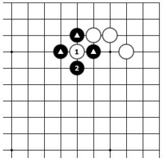
图四
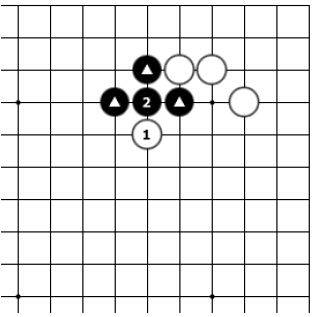
图五
图四：黑2可以立即提掉白棋，白1有一种“羊入虎口”的感觉！
图五：白如果下1位，黑2粘，黑棋△三子成功地连接在了一起。
二、切断的方法
在围棋对局中，如果能够分断对方，便可对其进行攻击，以达到各个击破的目的。围棋谚语称“棋从断处生”等，说明了“切断”在对局中的重要性。
把对方棋子分隔开，就是成功的切断！
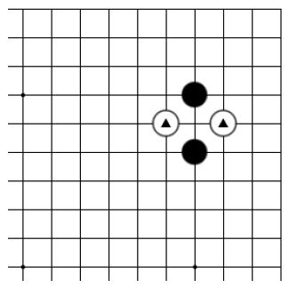
基本图一
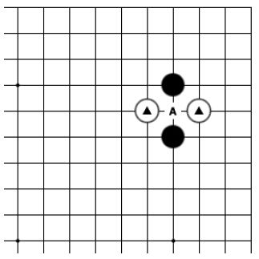
图一
基本图一：怎样能切断白棋▲二子呢？
图一：A位是双方共同的要点，谁先走到，谁就可以连接自己并切断对方。
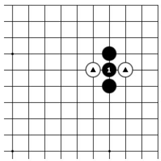
图二
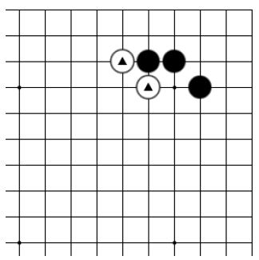
基本图二
图二：黑1在连接自己两个子的同时成功地切断了白▲二子。
基本图二：怎样切断白棋▲二子呢？
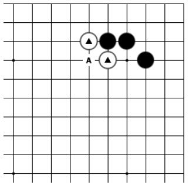
图一
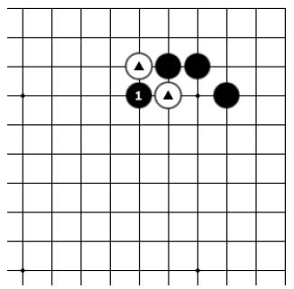
图二
图一：A位是白棋的断点。
图二：黑1断，成功地切断了白▲二子。